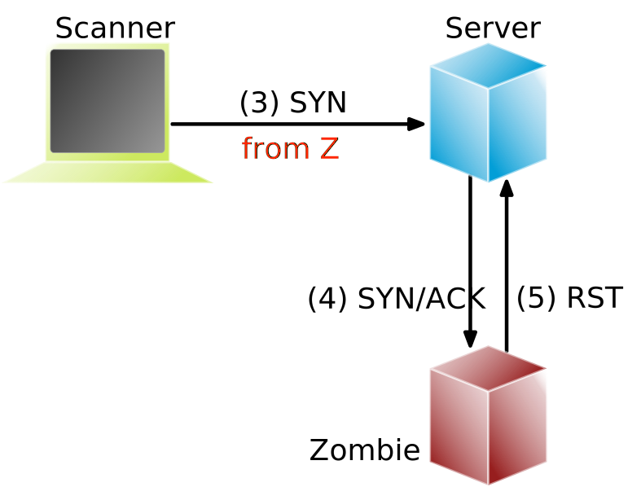

Port Scans: Idle Scan [2]
Bei allen bisher betrachteten Scans kann der Scanner prinzipiell identifiziert werden. Unter Verwendung eines sog. Zombies geht es auch anders:
Sondiere IP ID des Zombies:

Starte Scan:
Zombies: ein Rechner (Computer, Drucker oder anderes IoT Gerät) im Internet möglichst ohne eigenen Netzverkehr und mit altem Betriebssystem, bei dem die IP ID in vorhersehbarer Weise inkrementiert wird.
Sollte ein Intrusion Detection System vorhanden sein, so wird dieses den Zombie als Angreifer identifizieren.
Grundlegende Idee: Der Zombie sendet ein RST Paket zurück, da er kein SYN gesendet hat und kein SYN/ACK erwarte. Dadurch erfährt der Angreifer die aktuelle IP ID des Zombies. Über diesen Seitenkanal - d. h. die Veränderung der IP ID des Zombies - kann der Angreifer nun den Zustand des Ports auf dem Zielrechner ermitteln.